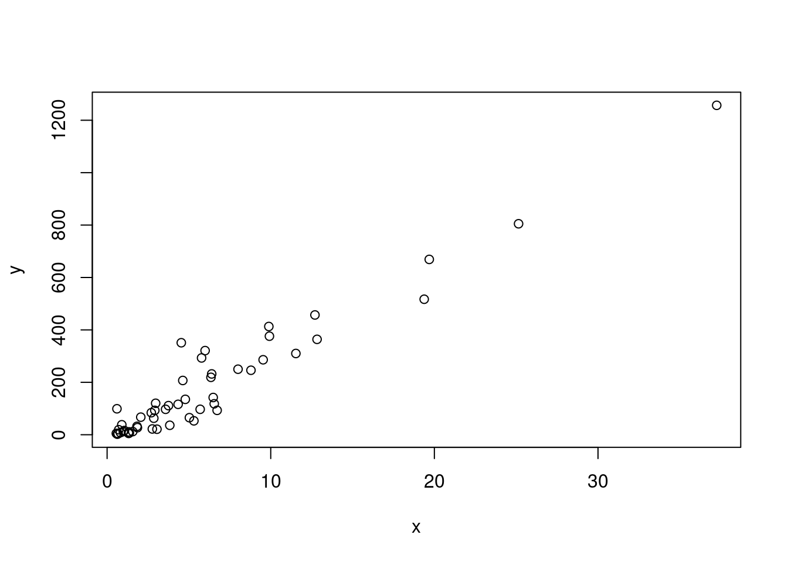

Topic 3 Example: Solving quadratic equations; “quadratic formula” if you want to solve ax^2 + bx + c = 0
- Try:
a <- 1
b <- 1
c <- 1Notice nothing prints, but we have created
objects'' orvariables’’ with these namesto print the value of the variables, try
a## [1] 1or
print(a)## [1] 13.1 Workspace
- You can see all objects currently available in the workspace by the command
ls()## [1] "a" "b" "c" "murders"alternatively, just look in the
environmenttabIf you try to access an object not available in the workspace, you will get an error
x## Error in eval(expr, envir, enclos): object 'x' not found3.2 Solving the quadratic equation
(-b + sqrt(b^2 - 4*a*c)) / (2*a)## Warning in sqrt(b^2 - 4 * a * c): NaNs produced## [1] NaN(-b - sqrt(b^2 - 4*a*c)) / (2*a)## Warning in sqrt(b^2 - 4 * a * c): NaNs produced## [1] NaN3.3 Write a function to do this
3.4 Example function log
log(8)## [1] 2.079442log(8, base=10) # optional argument## [1] 0.90309log(base=10, x=8) # change order if name arguments## [1] 0.90309?log3.5 Practice:
- What is the sum of the first 100 positive integers? The formula for the sum of integers 1 through n is n(n+1)/2. Define n=100 and then use R to compute the sum of 1 through 100 using the formula. What is the sum?
3.6 Data types
we often need to tell the difference between vectors of numbers, tables of numbers, character strings, and more complex data types
data.frame
- teach
head, the accessor$
- teach
vector
- numeric, character, logical, factors (categorical variables)
matrix
- create one
- show relationship with data.frame
list
- complicated data structure that can combine these
creating vectors
- use
ccommand (stands for concatenate) - create sequences
- subset of vector, single and group
NA= not available, missing data- max function
- order, sort functions
- use
3.7 Vector arithmetic
- multiply vector by constant
- add or subtract vector by constant
- same operations on two vectors of equal length
3.8 subsetting with logicals
murder_rate <- murders$total / murders$population * 100000
ind <- murder_rate < 0.71
murders$state[ind]## [1] "Hawaii" "Iowa" "New Hampshire" "North Dakota"
## [5] "Vermont"sum(ind)## [1] 53.9 logicals
- TRUE and FALSE, &, ==, <=
3.10 %in%
- %in% finds all an element of first vector is in 2nd vector
c(1,2,3) %in% c(3,4,5)## [1] FALSE FALSE TRUE3.11 basic plots
x <- murders$population / 10^6
y <- murders$total
plot(x, y)
hist(x)
3.12 Chapter 3: Programming basics
3.13 if/else
ind <- which.min(murder_rate)
if(murder_rate[ind] < 0.5){
print(murders$state[ind])
} else{
print("No state has murder rate that low")
}## [1] "Vermont"- any, all
3.14 write quadratic function
3.15 for loops
- compute sum of series 1 to n
compute_s_n <- function(n){
x <- 1:n
sum(x)
}
m <- 25
s_n <- vector(length = m) # create an empty vector
for(n in 1:m){
s_n[n] <- compute_s_n(n)
}
n <- 1:m
plot(n, s_n)
3.16 Vectorization
- often preferred over for loops
n <- 1:25
compute_s_n(n)## Warning in 1:n: numerical expression has 25 elements: only the first used## [1] 1n <- 1:25
s_n <- sapply(n, compute_s_n)3.17 Recommend that you read Ch. 4 about tidyverse
R has very good data clean / manipulating tools
largely won’t cover in class
3.18 Recommend that you read Ch. 6-11 about data visualization
- Another very strong point of R
- ggplot
- 538’s graphs produced with ggplot
3.19 Ch. 40 Reproducible Research
Rmarkdown is a very useful way to mix code and content
File -> New Rmarkdown
Header, alternatively pdf_document
code chunks, put some of the code that we have written there
click knit
lists, italics, bold,
code, linksequations \(1+1\) or
\[ -b \pm \sqrt{b^2 - 4ac} \]
- tables
| Column 1 | Column 2 | Column 3 |
|---|---|---|
| Cell Contents | More Stuff | And Again |
| and more | and more | and more |